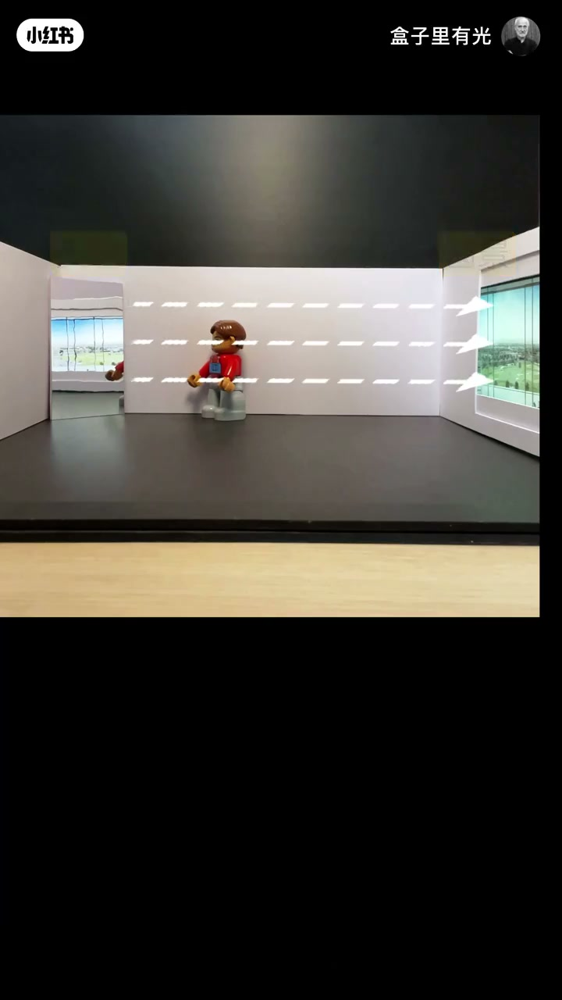
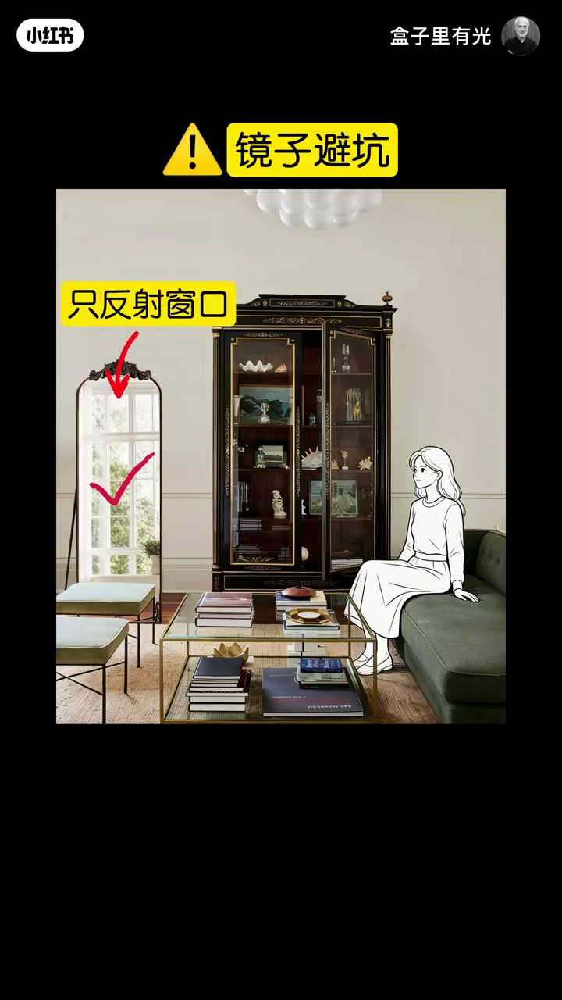
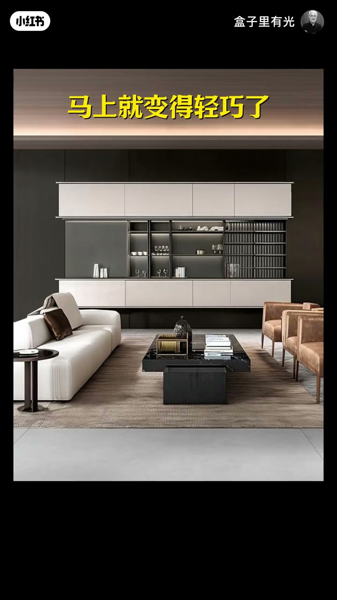
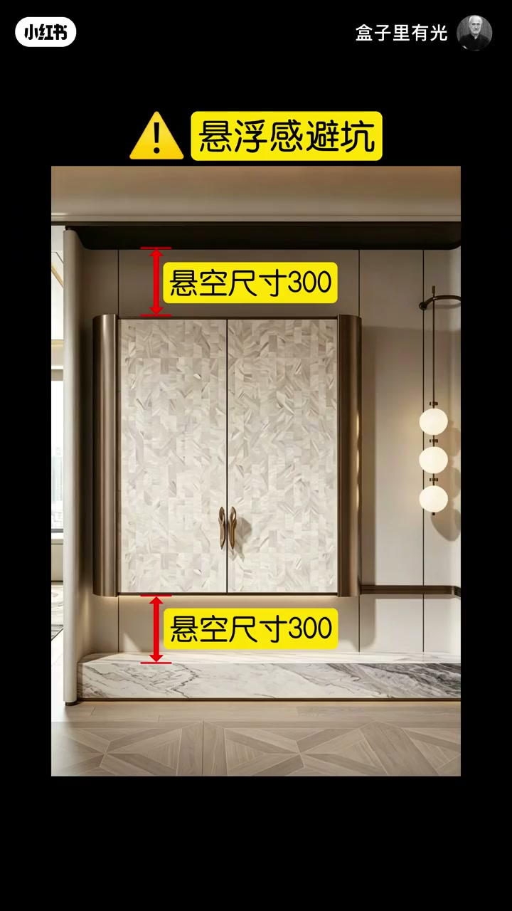
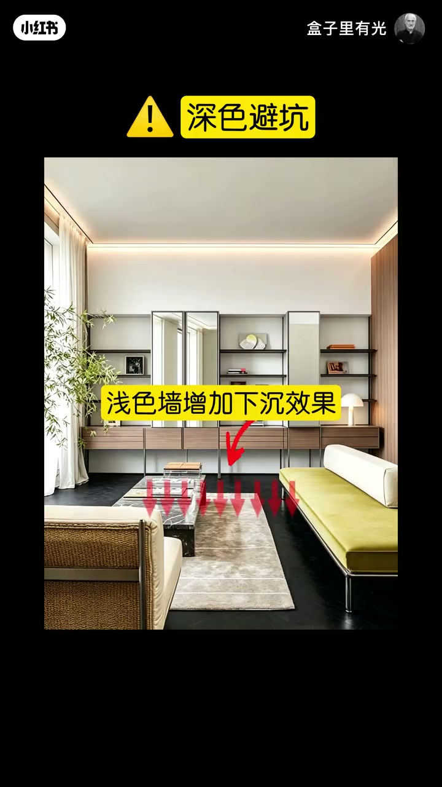

内容要点
同一作者把「家里显大」收成三招可检查操作：墙角镜只反射窗景制造「第二扇窗」；背景墙上下留空减重量并约按 300mm 控悬空；深色地面助显高且必须配浅墙。每招都有角度、高度或配色反例。
知识结构
昏暗墙角镜反射窗景→两扇窗更敞亮；角度只对窗口，避免杂乱反射。
厚重背景墙上下留空得悬浮轻盈与墙面连贯；悬空约300mm，勿过高过低。
浅地膨胀显矮，深地收缩助显高；深地必须配浅墙，否则下沉感被抵消。
显大三招对应三种结构：反射补光、留空减重、明度管高度。落地检查清单是——镜是否只映窗口、悬空是否约 300mm、深地旁墙是否保持浅色。
00:00-00:28墙角镜反射窗景；角度只对窗口
开场墙角闭塞：加一面镜子反射对面窗景，感觉多了一扇窗，闭塞感下降。昏暗墙角同理，一扇窗变两扇窗，房间更敞亮。00:06 模型用虚线箭头把「镜→窗」视线画死。
镜子要摆好角度：不要反射特别乱的画面；调整到只反射窗口，才能同时增加通透并避开杂乱。


00:28-01:16上下留空减压迫；悬空约300mm
第二招弱化物品重量感：高大厚重背景墙有压迫，还把后面的墙截成两段破坏整体；造型上下留空后出现悬浮轻盈，视线更远，压迫下降，墙面也更连贯有层次。00:55 实景双黄框「留空」标在柜顶与柜底。
悬浮造型不要太高（重心高会有向下压迫），也不要太低（悬浮感不明显、显拥堵）；保持上下悬空大约 300（家装习惯理解为毫米），既重心稳定又轻盈利落。01:12「悬浮感避坑」页用双箭头标死上下「悬空尺寸300」。


01:16-01:52深色地面助显高；必须配浅色墙
第三招延伸视线高度：浅色是膨胀色，用在地面给人上升感，房间显矮；换成深色收缩色，给人下沉感，房间显高。浅地会把墙面向上托举；深地把托举变成下沉。
硬配对：有了深色地面就不能要深色墙面，墙会弱化地面的下沉效果；换成浅色墙，下沉感回来，房间更显高、更明亮、更有层次。01:46「深色避坑」页用「浅色墙增加下沉效果」钉死配对。

完整转录（60段）
以下文本由 Whisper medium 模型自动转录，可能存在少量识别误差，已尽可能修正。
你看啊 这个墙角感觉很闭色
加一面镜子
镜子反射了对面的窗景
让你感觉这里多了一扇窗
就弱化了闭色感
再昏暗的墙角加一面镜子
镜子反射到了窗口
让人感觉一扇窗变成了两扇窗
房间就显得更敞亮了
那镜子要摆好角度
不要反射出来的画面特别乱
调整角度 只反射窗口
既能增加通透感
又能避免杂乱的效果
那除了用镜子的反射
我们还可以弱化物品的重量感
一个高大厚重的背景墙
你在这感觉很有压迫感
还把后面的墙截成了两段
破坏了墙面的整体感
把造型上下流空
给人悬浮的轻盈感
你的视线看得更远了
就降低了压迫感
上下的流空还能让墙面
显得更连贯 更整体
一个高大的背景墙感觉很笨重
把上下流空马上就变得轻巧了
墙面也显得更连贯 更有层次感
那悬浮造型不要太高
重心太高就有向下的压迫感
也不要太低
重心太低
悬浮感就不明显了
就显得很拥堵
保持上下悬空的尺寸在300左右
既感觉重心稳定
又显得轻盈俐落
那除了钢材的方法
还可以延伸视线长度
浅色是膨胀色
用在地面给人上升的感觉
房间就显矮
换成深色
深色是收缩色
给人下沉的感觉
房间就显高
浅色的地面向外扩张
感觉把墙面向上托举
房间就显矮
换成深色
向上的托举感变成了下沉感
就能让房间显得更高
那有了深色的地面
就不能要深色的墙面
墙面会弱化地面的下沉效果
换成浅色墙就恢复了下沉感
让房间更显高
更明亮
也更有层次感